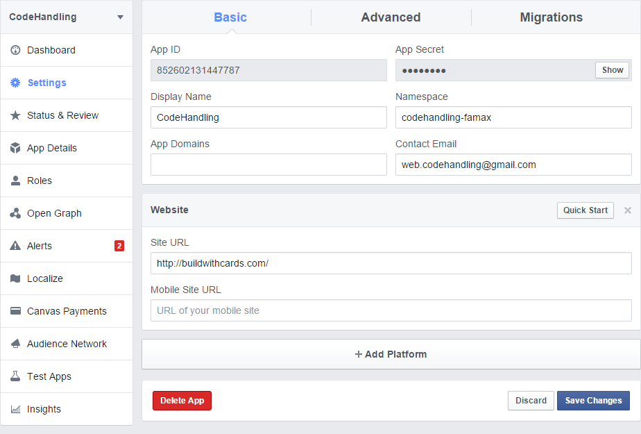
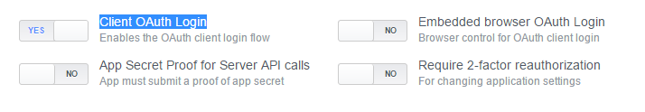

How To Use
This is a script to generate Facebook Access Tokens for your account.
1. You can either download this
package and host it on your server. This package must be hosted under the domain mentioned in the "Site URL" field in your Facebook App Settings.
2. Or You can temporarliy set your "Site URL" to "http://buildwithcards.com/" and use the script hosted right here.

Also, make sure the "Client OAuth Login" in set to "YES" in your App Advanced Settings
